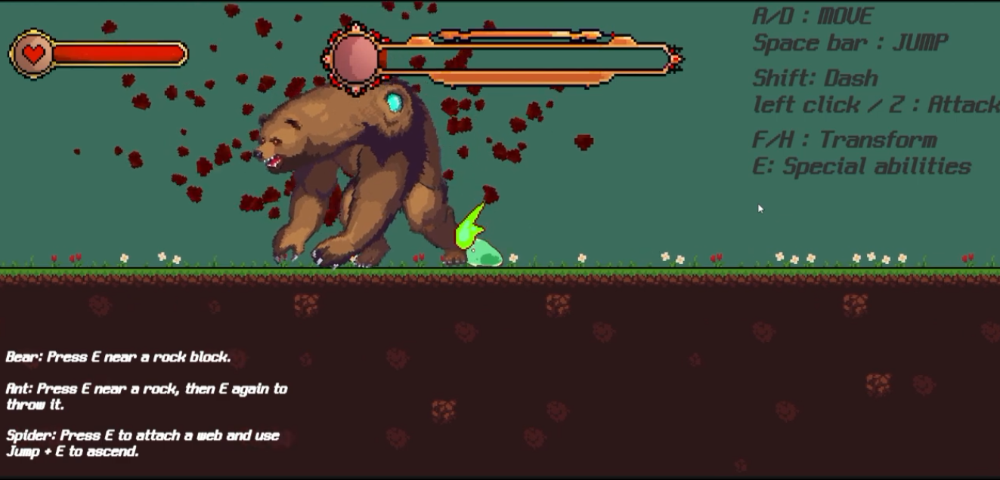

Slime Project는 하드코어 액션 퍼즐 플랫포머 게임으로, FiniteStateMachine(FSM) 기반 상태 관리 시스템을 통해 모든 게임 엔티티의 행동을 체계적으로 관리합니다. 플레이어 슬라임의 움직임, 변신 능력, 그리고 변신 시 능력 변화를 구현했으며, 보스 몬스터와 일반 몬스터의 AI 로직을 담당하여 확장 가능한 게임 시스템을 구축했습니다.
인게임 핵심 시스템 & 스크린샷 미리보기
플레이어 슬라임의 조작과 몬스터 조우, 토끼 몬스터 타격 액션부터 거대 곰 보스 몬스터와의 페이즈별 전투까지 주요 인게임 화면을 넘겨가며 옆으로 스크롤하여 확인할 수 있습니다.

1. 프로젝트 개요
본 프로젝트는 복잡한 게임 로직을 디자인 패턴을 활용해 구조화하는 데 집중했습니다. 모든 캐릭터와 몬스터는 통일된 인터페이스를 공유하며, 기능 중심의 컴포지션 설계를 통해 유지보수성을 극대화했습니다.
FiniteStateMachine 기반
상태 전환 관리 및 라이프사이클
슬라임 움직임/공격
변신 능력 동적 교체 구현
델리게이트 기반 스킬
HP 단계별 패턴 업그레이드
상태머신 기반
유형별 행동 패턴 확장
2. FiniteStateMachine 기반 상태 관리 시스템
몬스터와 플레이어의 상태 클래스가 공통 State를 상속하도록 구성했습니다. Enter / Exit / LogicUpdate / PhysicsUpdate / DoChecks 호출 규약을 공유하고, 몬스터는 Monster_State, 플레이어는 Player_State에서 각 대상에 필요한 참조와 동작을 확장합니다. 공통 기반 클래스를 공유하되 상태 인스턴스는 각 객체가 따로 관리합니다.
몬스터는 FiniteStateMachine이 현재 상태의 전환과 업데이트를 관리합니다. 플레이어는 이동·공격·대시·사망 기능 객체를 조합하고 Player_Slime이 조건에 따라 직접 호출하여 기존 조작 방식을 유지합니다.
2.1 상태머신 구조 및 전환 플로우
몬스터가 사용하는 FiniteStateMachine은 공통 State 타입으로 현재 상태를 보관합니다. 상태 전환 시 이전 상태의 Exit를 호출한 뒤 새 상태의 Enter를 호출합니다. 아래 전환 흐름은 몬스터 FSM에 해당하며, 플레이어 기능 객체의 호출은 Player_Slime이 담당합니다.
1. State::Enter (상태 진입 및 초기화)
INIT상태 진입 시 애니메이션 트리거, 물리 속도 초기화, 타이머 리셋
2. Execution Loop (프레임 업데이트)
LOOPLogicUpdate(): AI 로직 연산 | PhysicsUpdate(): 물리 이동 및 충돌 판정
Trigger Transition? (전환 조건 충족 여부)
3. State::Exit & NewState::Enter (순차 전환)
TRANSACTION이전 상태의 Exit() 호출 후 새 상태의 Enter() 호출로 종료와 진입 순서 유지
상태머신 핵심 로직 몬스터 상태머신의 초기화와 Exit → Enter 호출 순서를 구현한 실제 코드입니다.
코드 보기: FiniteStateMachine.cs
using System.Collections;
using System.Collections.Generic;
using UnityEngine;
// 적들의 상태를 추적하고, 상태에 따른 올바른 코드를 실행시킨다
public class FiniteStateMachine
{
public State currentState { get; private set; }
public void Init(State startingState) // 유한상태머신을 초기화한다는 의미
{
currentState = startingState; // 현재 상태 설정
currentState.Enter(); // 그 상태를 실행
}
public void ChangeState(State newState) // 상태 변경
{
currentState.Exit(); // 전의 상태를 종료하고
currentState = newState; // 현재 상태를 업데이트
currentState.Enter(); // 현재 상태에 돌입
}
}2.2 State 베이스 클래스
State는 특정 엔티티나 애니메이션 파라미터에 의존하지 않는 공통 기반 클래스입니다. 기본 메서드는 부수 효과 없이 비어 있으며, 각 하위 클래스가 필요한 동작을 재정의합니다. 몬스터의 애니메이션 제어·시작 시간 기록·센서 검사는 Monster_State에서 처리합니다.
State
├── Monster_State
│ └── IdleState / MoveState / JumpState / Dash / AttackState 등
└── Player_State
└── Player_Movement / Player_Attack / Player_Dash / Player_Dead코드 보기: State.cs
// Shared lifecycle for monster states and player feature modules.
// Owner-specific data and side effects belong to the specialized branches.
public class State
{
public virtual void Enter() { }
public virtual void Exit() { }
public virtual void LogicUpdate() { }
public virtual void PhysicsUpdate() { }
public virtual void DoChecks() { }
}Player_State는 공통 생명주기를 상속하고 Player_Entity 참조를 추가합니다. 플레이어 기능 클래스의 생성자와 Player_Slime의 호출 흐름은 유지하므로, 공통 타입을 사용하면서도 이동·공격·대시 기능을 각각 관리할 수 있습니다.
코드 보기: Player_State.cs
// Player modules share the State lifecycle while retaining a typed owner.
public class Player_State : State
{
protected Player_Entity entity;
public Player_State(Player_Entity entity)
{
this.entity = entity;
}
}3. 플레이어 슬라임 및 변신 시스템
플레이어 슬라임의 움직임, 공격, 대시, 피격 처리를 구현했습니다. 컴포지션 패턴을 활용하여 각 기능을 독립적인 클래스로 분리하고, Player_Slime에서 통합 관리합니다. 기능 클래스는 Player_State를 거쳐 공통 State 생명주기를 상속하며, 실행 시점은 플레이어 컨트롤러가 결정합니다.
3.1 시스템 구조 (Composition Pattern)
Player_Slime은 모든 컴포넌트의 허브 역할을 수행하며, 각 기능 모듈은 자신의 도메인 로직에 집중합니다.
Player_Slime (중앙 제어 허브)
CONTROLLER HUBPlayer_State 기반 기능 객체 초기화 및 조건별 호출, 이동·공격·대시·사망 처리 통합 관리
3.2 변신 능력 시스템
플레이어가 몬스터를 처치하면 해당 몬스터의 형태로 변신할 수 있습니다. 변신 시 각 형태의 고유 능력을 사용할 수 있으며, Player_FormMovement를 통해 특수 이동 로직이 활성화됩니다.
- 슬라임 (기본): 원거리 포물선 공격, 대시 무적 프레임 활용.
- 토끼 (변신): 더블 점프 및 벽 점프 능력 획득.
Rabbit_ability와 연동하여 벽 점프 중 조작 제한 물리 로직 적용.
코드 보기: Player_Slime.cs - 초기화 로직
// Player_Slime.cs에서 필드와 Start()를 발췌
public class Player_Slime : Player_Entity
{
public Player_SlimeMovement movement { get; private set; }
public Player_Attack attack { get; private set; }
public Player_Dash dash { get; private set; }
public Player_Dead dead { get; private set; }
[SerializeField] private D_PlayerMovement movementData;
[SerializeField] private D_PlayerAttack attackData;
[SerializeField] private D_PlayerDash dashData;
[SerializeField] private D_PlayerDead deadData;
[SerializeField] private Transform meleePos;
[SerializeField] private Player_HpBar hpBar;
private SpriteRenderer formSpriteRenderer;
protected override void Start()
{
base.Start();
formSpriteRenderer = GetComponent<SpriteRenderer>();
facingDirection = 1;
sensor = new Player_Sensor(this, sensorData, ForwardSensorPos, MiddleSensorPos, BackwardSensorPos);
movement = new Player_SlimeMovement(this, movementData, this);
attack = new Player_Attack(this, attackData, meleePos);
dash = new Player_Dash(this, dashData);
dead = new Player_Dead(this, deadData);
}
}4. 보스 및 일반 몬스터 AI 시스템
보스 몬스터의 스킬 시스템을 델리게이트 기반으로 구현하여 확장 가능한 AI를 설계했습니다. HP 단계에 따라 스킬이 업그레이드되며, 거리와 상황에 따라 지능적인 패턴을 생성합니다.
4.1 보스 AI 의사결정 및 스킬 시스템
보스는 매 업데이트마다 플레이어와의 거리를 산출하고, 델리게이트 배열에 등록된 스킬 풀(Pool)에서 최적의 패턴을 선택하여 실행합니다.
플레이어 거리 및 방향 분석
HP 50% 이하 스킬 업그레이드
델리게이트 배열 랜덤 인덱싱
Invoke Skill Action
코드 보기: MainBossBear.cs - 델리게이트 기반 스킬 관리
// MainBossBear.cs: 보스 스킬 시스템
public class MainBossBear : BossBearSetting
{
private delegate void BossBear_SkillAction();
private BossBear_SkillAction[] BossBear_Skills;
public bool IsSkillUpgrade; // HP 단계 플래그
public override void Start()
{
base.Start();
// 델리게이트 배열에 메서드 직접 할당
BossBear_Skills = new BossBear_SkillAction[4] { Rest, Smash, Dash, Rumbling };
}
private void RandomBossBearSkillState()
{
int RandomSkill_Index = Random.Range((int)BossBear_SkillEnum.Smash, (int)BossBear_SkillEnum.Skill_Max);
// 선택된 스킬 메서드 대리 호출
BossBear_Skills[RandomSkill_Index].Invoke();
}
}4.2 일반 몬스터 AI 확장 사례
일반 몬스터의 행동 상태는 State → Monster_State → 공통 행동 상태 → 몬스터별 상태 순서로 확장합니다. Monster_State는 몬스터 엔티티와 FSM 참조를 보관하고, 진입 시 시작 시간 기록·애니메이션 활성화·센서 검사를 처리합니다. 플레이어의 Player_State와 같은 State를 공유하면서 몬스터에 필요한 동작을 별도로 유지합니다.
- Bear (돌진형):
Bear_DashState : DashState로 돌진을 구현하고, 돌진 종료 후 플레이어 감지 여부에 따라 감지·탐색 상태로 전환합니다. - Spider (도약형):
Spider_JumpState : JumpState로 공중 이동을 처리하고, 착지 후 감지·이동 상태로 전환합니다. - Ant (기본형):
Ant_MoveState로 순찰·방향 전환을 처리하고,Ant_MeleeAttackState에서 공격 범위를 판정해 피해를 적용합니다.
코드 보기: Monster_State.cs - 몬스터 공통 기반
using System.Collections;
using System.Collections.Generic;
using UnityEngine;
// 적들의 상태가 가져야 하는 모든 기능을 포함하는 상태 클래스, 여러 상태들은 이 state클래스를 상속받음
// 적 클래스에서 해당 상태의 객체를 생성하고 유한상태 머신을 이용하여 우리가 어떤 상태인지를 추적한다.
public class Monster_State : State
{
protected FiniteStateMachine stateMachine; // 상태머신
protected Monster_Entity entity; // 객체 (몬스터의 부모 객체)
protected float startTime; // 상태 시작 시간.
protected string animBoolName; // 애니메이션에 따른 파라미터 이름
public Monster_State(FiniteStateMachine stateMachine, Monster_Entity entity, string animBoolName)
{
this.stateMachine = stateMachine;
this.entity = entity;
this.animBoolName = animBoolName;
}
public override void Enter() // 어떤 상태에 돌입했을 시,
{
startTime = Time.time; // 스타트 시간을 현재시간으로 설정
entity.anim.SetBool(animBoolName, true); // 파라미터세팅
DoChecks(); // 체크해야될 요소 확인
Debug.Log("Enter: " + animBoolName);
}
public override void Exit()
{
entity.anim.SetBool(animBoolName, false); // 애니메이션 종료
}
public override void LogicUpdate()
{
}
public override void PhysicsUpdate()
{
DoChecks();
}
public override void DoChecks() // 주기적으로 체크하기 위해 존재하는 함수
{
}
}곰의 돌진 상태는 DashState → Dash → Monster_State → State 상속 경로를 사용합니다. 아래 실제 코드에서 공통 돌진 로직을 호출하고, 곰 전용 상태 전환과 물리 저항값을 추가합니다.
코드 보기: Bear_DashState.cs - 몬스터별 확장
using System.Collections;
using System.Collections.Generic;
using UnityEngine;
public class Bear_DashState : DashState
{
private BearMonster bear;
public Bear_DashState(FiniteStateMachine stateMachine, Monster_Entity entity, string animBoolName, D_DashState stateData, BearMonster bear) : base(stateMachine, entity, animBoolName, stateData)
{
this.bear = bear;
}
public override void DoChecks()
{
base.DoChecks();
}
public override void Enter()
{
base.Enter();
bear.atsm.dashState = this;
}
public override void Exit()
{
base.Exit();
}
public override void LogicUpdate()
{
base.LogicUpdate();
if (isAnimatioonFinished && !performDashAction)
{
entity.rb.drag = 0;
if (isPlayerInMinAgroRange) // 플레이어가 존재한다면
{
stateMachine.ChangeState(bear.playerDetectedState); // 플레이어가 감지되었는가?
}
else
{
stateMachine.ChangeState(bear.lookForPlayerState); // 플레이어 탐색
}
}
}
public override void PhysicsUpdate()
{
base.PhysicsUpdate();
}
public override void TriggerDashing()
{
base.TriggerDashing();
entity.rb.drag = stateData.dashDragValue;
}
public override void FinishDashing()
{
base.FinishDashing();
}
}